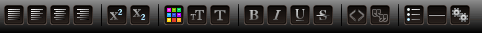
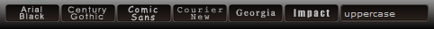
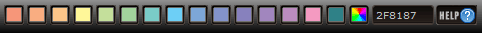
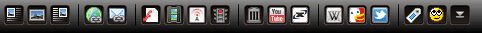
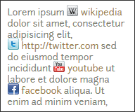

{kind=link}
Advanced BBCode Box for RavenNuke™ v2.5.2
PHPBB2 Forum BBCode Modification for RavenNuke™ v2.5.x, which expands the standard BBCode features to allow: audio/video embeds, text formatting/styling options, image/video positioning, customizable color swatches, inline ajax help, forum search "tags", modal search functions for wikipedia and duckduckgo, as well as various other features.
Improved UI and CSS layout which can be customized per theme. Four sprite powered editor themes included in sand, light blue, crimson, and black; or build your own with a little CSS know-how and the included photoshop files.
Several optional addons are included to further enhance your RavenNuke™ powered site; which allows you to add code highlighting, link icons, easy youtube videos, and/or hashtags.
After an easy installation, courtesy of a comprehensive, kickstart powered install guide, you may find yourself asking, "Who needs phpbb3?"
{kind=link}
{kind=link}
{kind=link}
{kind=link}
New Features
Improved UI, CSS Layout, and CSS Sprites
Editor Toolbars are styled completely via CSS, allowing the editor to be styled to match individual themes and break-out of the MS-Word 2003 look. All images within the editor now use CSS sprites, with many buttons featuring mouseover and toggle effects. The majority of toolbars are hidden initially, and are toggled into view by one of the visible buttons; with a nice jQuery SlideToggle animation.
Text Size Selection
Font size selection now uses buttons instead of a select menu, and also utilizes CSS classes instead of inline styling. In most cases relative sizes are used, which offers greater flexibility regardless of the initial default font-size that a given theme/visitor is using. Another advantage of using buttons, is that previously the same text size could not be applied more than once in a row; as the bbcode was only inserted when the value of the select menu changed. Sample: [class="small"][/class}
Font Type and Custom Classes
Font type selection also uses buttons instead of a select menu, utilizing CSS classes instead of inline styling. Basic font classes are defined to display the most similar font regardless of operating system or browser, as not all fonts are actually available on all operating systems. Font declarations can be overridden by theme, so if you prefer to replace a button with a custom font (like those from font squirrel) you can!
Size and Positioning Options for Multimedia Embeds
A variety of size and positioning options have been added for YouTube and (the newly added) Internet Archive video embeds. Both embed types utilize the iframe method, which allows for device specific videos to be delivered to the user. This means the user may get a html5 or flash video depending on the capabilities of the given device viewing the site. Size and positioning options are CSS based and can be customized by theme
Custom Color Swatches and Color Picker

The color select menu has been replaced by swatches that can be customized by theme. For example, there is no reason to offer black text if your theme uses black backgrounds. Also offers the advantage of matching the color palette to an individual theme, as dark colors work better for light backgrounds, and pastel colors work better for dark backgrounds. Custom hex colors can be applied via the newly added jscolor color picker. Sample: [class="color1"][/class]
Various New Features
While not a complete overview, just a few of the new features available in ABBC2.5.2
- Float an Image to the Left
[imgleft]http://yoursite.com/image.jpg[/imgleft] - Float an Image to the Right
[imgright]http://yoursite.com/image.jpg[/imgright] - DuckDuckGo Web Search in Modal
[duck]your search term[/duck] - Wikipedia Search in Modal
[wiki]your search term[/wiki] - International Wikipedia Search in Modal
[wiki=es]suerte[/wiki] - Forums Search/Keyword Tag
[tag]forum search term[/tag] - Internet Archive (audio)
[archive="audio"]http://archive.org/details/MozartEineKleineNachtmusik[/archive] - Internet Archive (video)
[archive="video"]http://archive.org/details/night_of_the_living_dead[/archive] - Video Size
[youtube="video-large"]http://www.youtube.com/watch?v=lDxyJGMJ_P8[/youtube] - Video Position
[archive="video-center"]http://archive.org/details/the_brain_that_wouldnt_die[/archive] - Video Size & Position
[youtube="video-small-left"]http://www.youtube.com/watch?v=lDxyJGMJ_P8[/youtube]
Non-BBCode Features
Inline Ajax Help
Several of the toolbars feature inline help which is loaded directly into the editor via ajax, giving users basic tips without having to open another browser window.
Full Width Padded Textarea
A somewhat experimental 100% width cross-browser padded auto-expanding textarea (that's a mouthful), which is not an easy task due to the differences with how textareas are rendered by various browsers. A minimum and maximum height can be configured so that the textarea doesn't grow more than desired (default max 600px) as at some point the user would need to scroll anyway... (running out of visible space in the browser window)
Insert at Caret Position
In order to perform more like an actual editor, all codes are now inserted at the caret position; as well as updating the caret position code for smilies which did not work reliably in some browsers. Tested in browsers below.
Browser Compatibility
Tested on Firefox (Win7,WinXP,Linux Mint), Internet Explorer 8-9 (WinXP,Win7), Google Chrome (WinXP,Win7), Safari (Win7), and Opera (Win7)
Deprecated Features
Features from Previous Versions of Advanced BBCode
Several features from previous versions of Advanced BBCode Box have been removed from the editor, and can be optionally supported for backwards compatibility. Deprecated features include: [fade][/fade] [marq=right][/marq] [font=Verdana][/font]. Since Google Video is now only a search engine, support for [GVideo][/GVideo] has been removed. The iframe option [web][/web] was removed in previous versions and is no longer supported due to security concerns.
Standard BBCode Features
Some standard bbcode features are still supported but have been replaced within the editor with class based equivalents; such as [size=14][/size]. The [color=red][/color] bbcode is also still supported, but is used only for custom hex codes within the editor.
Optional Features
highlight.js
EasyIcons
EasyTube
#hashtags
Code Highlighting featuring Highlight
Highlight.js highlights syntax in code examples on blogs, forums and in fact on any web pages. It's very easy to use because it works automatically: finds blocks of code, detects a language, highlights it. Growing assortment of CSS based themes allows highlighting to be customized on a theme-by-theme basis. 16 languages are supported by default, although over 40 languages can be used if required by an individual site. The basic 16 valid classes are: apache, bash, cpp, cs, css, diff, html, ini, java, javascript, perl, php, python, ruby, sql, xml
Iconize Links to Desired Sites
A purely CSS based addon which automatically adds icons to links, allowing for specific icons to be used for specific sites. Use the included Vector Social Media Icons to "Iconize" as many popular social sites as desired; or create/find your own icons to "Iconize" your favorites sites from around the web. Easy to add sites and customize to your needs. Intended for use in the forums, but can be used sitewide if desired.
Easy YouTube Video Embeds
Let's face it, users are lazy or don't necessarily always understand how to use bbcode. So why not allow for easy embedding of youtube videos by simply including the URL to the video, with no extra markup required? Enter the EasyTube Mod to add auto-embed support for over a dozen popular youtube URL's. Special thanks to eldorado for the idea and getting the ball rolling on implementation, and to ridgerunner for writing and maintaining an excellent regular expression suited for the job.
Tricked Out News #hashtag Mod
Adds a Twitter like hashtag mod for your RavenNuke™ forum. If you are not familiar with hashtags, they are any SINGLE word that you place the # sign in front of, to link to a keyword search in the forum. Although it functions in a similar manner to that of the newly added [tag]term[/tag] it makes a nice shorthand compliment for quickly tagging desired posts. Not to mention, installation only requires one additional line of code! Thanks nuken!
Get Started with the Installation
ABBC Box
If you find this mod useful please show your support with a small donation for Poochy
Special thanks to the original authors of ABBC Box
Disturbed One (Anthony Coy)
AL Tnen (N/A)
freddie (Stefaan Van Damme)
As well as many others who have contributed over time
Browser Support


Featuring
- Auto Expanding Textarea
- By Craig Buckler, Optimalworks.net
- Javascript Color Picker
- JScolor native javascript color picker
- FatCow Hosting Icons
- Huge free icon set
- Vector Social Media Icons
- by IconDock.com & Double-J Design
Release History
- Version RN2.5.2 (2018)
- Version RN2.50 (2012)
- Version RN24_01 (2010)
- Version RN2.30 (2008)
- Version 5.1.0c (2007)
- Version 5.0.0 (2005)
- Version 5.0.0 (2005)
- Version 5.0.0 (2005)
- Version 5.1.0 (2007)
- Version 5.0.0a (2005)
- Version 5.0.0 (2005)
{kind=link}